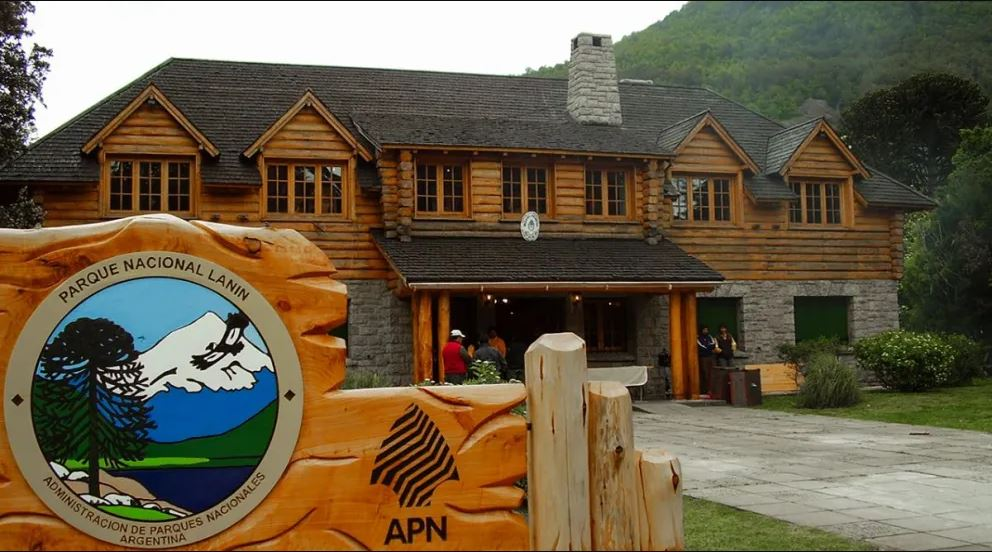

El Parque Nacional Lanín se estableció formalmente el 11 de mayo de 1937 mediante la Ley Nacional N° 13.895, bajo la presidencia de Agustín P. Justo. Su creación formó parte del plan maestro de Parques Nacionales diseñado por Exequiel Bustillo, entonces director del sistema. La fundación del parque respondió a urgentes necesidades de conservación: detener la tala indiscriminada de bosques nativos, especialmente de araucarias milenarias, y proteger cuencas hídricas esenciales. Los primeros guardaparques comenzaron sus funciones en 1945, estableciendo los puestos de control y vigilancia que permitieron la recuperación de los ecosistemas degradados.
